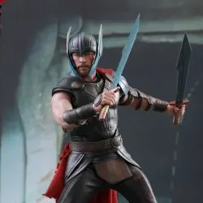

Seleccione Personaje
Nuevo mensaje
Tomar Foto
Grabar
Detener
Volver a grabar
¿Quieres usar el chat como app?
Instalar la aplicación en su dispositivo
✕
Notificaciones Activadas
Notificaciones Desactivadas
